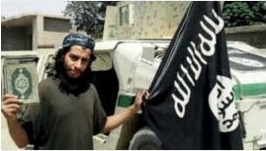
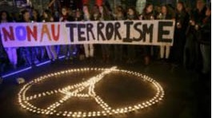
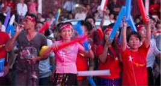
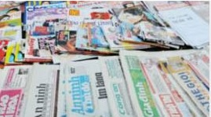

Nga nói khủng bố Mỹ khiến phi cơ bị đâm
Nga nói hành đọng khủng bố đã khiến chiếc phi cơ của Nga bị đâm ở Ai Cập hồi tháng 10 và giết hại tất cả 224 người trên máy .
17 tháng 11 2015 | Thế giớiPhi cơ Nga :'bom trong khoang hành lý'
Nga nói chưa kết luận về vị rơi máy bay
Máy bay hàng không Nga 'rơi vì bom'?
Bóng đá: Tuyển Anh thắng Pháp 2-0
Tuyển Anh thắng Pháp 2-0 trên sân Wembley nhờ công của Alli ở trong phút 39 và Rooney phút 47, trong trận cầu diễn ra chỉ vài ngày sau vụ khủng bố ở Paris.
5 giờ trước | Thế giớiAnh Pháp giao hữu: Trận thách thức khủng bố
Tham nhũng, ma túy đông gấp bội 'đối lập'?
Bộ trưởng Công an Trần Đại Quang cho biết trong hơn ba năm qua, Bộ này xác định có 350 đối tượng 'lập hội chống đối'.
17 tháng 11 2015| Việt NamLuật Báo chí VN là 'vũ khí phe bảo thủ'?
Nhân sự và tư duy chính trị của Đảng
Tổng thống Pháp thề phá tan IS
17 tháng 11 2015 | Thế giớiCựu cán bộ an ninh bị tù vì Facebook
17 tháng 11 2015 | Việt NamSam Rainsy hoãn ngày về nước
17 tháng 11 2015 | Thế giớiAnh-Pháp:'Không phải là trận cầu thông thường'
17 tháng 11 2015 | Thể thaoNhiều bang Mỹ ngưng nhận tỵ nạn Sỷia
17 tháng 11 2015 | Thế giớiVietcombank ngưng dịch vụ ATM cho ngoại kiều
17 tháng 11 2015 | Kinh tếNghe/Xem
Đại biểu Nghĩa hỏi Thủ tướng 'quá khó'
17 tháng 11 2015 | MultimediaThủ tướng 'sẽ không đi ra ngoài đường lối'
17 tháng 11 2015 | MultimediaTưởng niệm các nạn nhân Paris tại Hà Nội
16 tháng 11 2015 | Multimedia'Xả súng' ở rạp hát Bataclan, Paris
16 tháng 11 2015 | MultimediaCảnh sát giải cứu con tin Paris
14 tháng 11 2015 | MultimediaParis sau các vụ tấn công tối 13/11/2015'
14 tháng 11 2015 | Thế giớiĐiểm nhấn
IS là gì và nguy hiểm tới đâu?
BBC Tiếng Việt điểm lại các quan điểm đánh giá ý thức hệ, thực lực quân sự của Nhà nước Hồi giáo.
16 tháng 11 2015 | Thế giớiQuan điểm
Nhiều người Hồi giáo ' đã khóc' trước Bataclan
Nhà báo tự do Phạm Cao Phong nói nhiều người Hồi giáo đã thực sự khóc và hát La Marseillaise ở nơi xảy ra khủng bố Paris.
15 tháng 11 2015Kinh tế
Cổ phiếu du lịch giảm vì tấn công Paris
Cổ phiếu của các hãng hàng không du lịch của châu Âu bị giảm mạnh vào thứ Hai vì nhà đầu tư lo lắng về ảnh hưởng của cuộc tấn công ở Paris.
17 tháng 11 2015Thể thao
Anh Pháp giao hữu:Trận thách thức khủng bố
Tuyển Pháp sẽ đến Anh với một thông điệp của sự đè kháng sau vụ tấn công đẫm máu.
17 tháng 11 2015Xã hội
Dấu ấn Mao: Từ Hồng vệ binh tới ông Tập
Bộ đồ đặc trưng thời Cách mạng Văn hóa được kẻ xấu trong phim phương Tây ưa dùng, và cũng là lựa chọn ưa thích của Chủ tịch TQ.
13 tháng 11 2015Học tiếng Anh
Máy bay Nga bị rớt tại Sinai,Ai Cập
Viên chức hàng không Nga loại bỏ lỗi lỹ thuật hay lỗi phi công trong vụ rớt máy bay tại Sinai,Ai Cập.
13 tháng 11 2015Học viện Báo chí
Hình ảnh
Giai ảnh CGAP 2015
Tác giả VN là trong số đoạt giải cuộc thi ảnh CGAP nhằm cho thấy cuộc sống người nghèo được cải thiện qua các dịch vụ tài chính.
Anh dự thi National Geographic
Một số bức ảnh tham gia dự thi cuộc thi National Geographic 2015 với các chủ đề Con người, Nơi chốn và Thiên nhiên.
Góc nhìn và chuyên mục
Bí ẩn những chuyến tàu ma ở Anh
QUẢNG CÁO
Đài Loan,Tây Tạng và những quốc gia không tồn tại
Nghi phạm chính vụ Paris:Abdelhamid Abâoud
Việt Nam:'Người tham nhũng xử lý người chống
Nhà nước Hồi giáo thay đổi chiến thuật
K-9 là gì và Việt Tân ứng xử ra sao?
Dùng vũ lực sẽ gặp cách mạng từ dưới lên?
Luật Báo chí VN là 'vũ khí phe bảo thủ'?

'Côn đồ đánh chứ không phải công an'
Một chút quyền lợi có lung lạc được bạn?
Đọc nhiều nhất